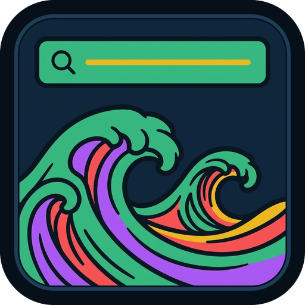

[ // QUICK INSTALL & AGENT BRIEF — gnome-extensions install --force tide@studio2201.github.io.shell-extension.zip ]
UUID: tide@studio2201.github.io · Instant Super & Super+Enter application and cross-workspace open-window launcher · Zero subprocesses, 0 shexli warnings · Part of the Studio 2201 GNOME Suite by @UberMetroid.

tide@studio2201.github.io · Super & Super+Enter Launcher · Zero SubprocessesInstant Super-Key Application & Open-Window Launcher for GNOME 45–50
Press Super or Super + Enter to summon a fast modal launcher with fuzzy application and cross-workspace open-window search, Ctrl+1..Ctrl+9 direct shortcuts, Kelp / Reef / Coral accent borders, and a 3-tab Libadwaita Settings & About dialog.
Engineered for Kelp, Reef, Shoal, Coral, Seabed & Modern GNOME
Derived from Pop Launcher Super-Key Standalone by icesx & ManeLippert and upgraded with open-window switching, fuzzy subsequence scoring, and custom accent borders.
Instant Super & Super+Enter Launcher
Press Super or Super + Enter (<Super>Return / <Super>KP_Enter) to open or close Tide immediately without triggering the full GNOME Overview or requiring external Pop Shell daemons, while respecting stickykeys-enable accessibility.
Open-Window & App Fuzzy Search
Searches both installed applications (ranked with Shell.AppUsage) and running windows across all workspaces in a top-anchored search bar whose result list shrinks upward as you type.
Kelp, Reef & Coral Accent Borders
Styles the launcher modal and active result row with a customizable high-contrast accent border and 1-click presets (Ocean Cyan, Kelp Emerald, Gruvbox Amber, Coral Red).
Quick Install
Install from the latest GitHub Release bundle across Fedora, Debian, Ubuntu, Arch, openSUSE, and NixOS:
gnome-extensions install --force tide@studio2201.github.io.shell-extension.zip gnome-extensions enable tide@studio2201.github.io